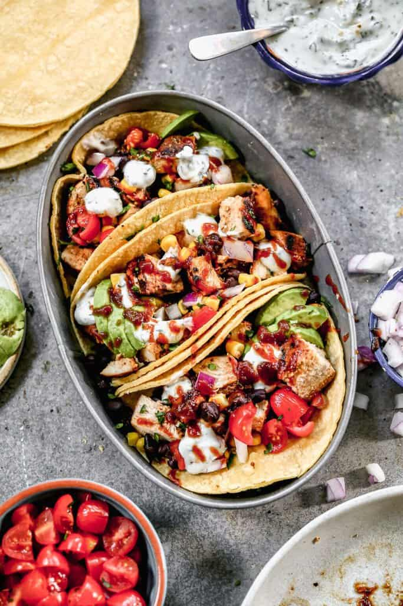

BBQ Chicken Tacos

Description
BBQ Chicken Tacos are a favorite healthy and easy dinner at our house. Marinated BBQ chicken is served in a warm tortilla topped with black beans, corn, onion, cilantro, avocado and a creamy cilantro lime sauce.
Ingredients
- Vegetables: This is a great meal to clean out the extra veggies in your fridge. We love to add grilled zucchini, mushrooms, bell peppers, chopped lettuce, or olives.
- Vegetarian: Instead of chicken, marinate extra firm tofu.
- Crockpot: Place chicken in crockpot and cover with bbq sauce. Cook for 3-5 hours on low, or until done. Chop or shred chicken.
How to Make BBQ Chicken Tacos:
- Marinate Chicken: Add chicken and ⅓ cup BBQ sauce to a ziplock bag. Refrigerate for 1-3 hours.
- Make Creamy Cilantro Lime Sauce by combining all ingredients until smooth. Refrigerate until ready to serve. The sauce could be made a few days ahead.
- Grill Chicken: Preheat grill and lightly grease with oil or cooking spray. Cook chicken for 4-5 minutes on each side, flipping once, until cooked through, 165 degrees F. Remove to a cutting board, baste with more BBQ sauce, and allow to rest for 5 minutes before chopping.
- Assemble Tacos: Warm tortillas on grill or in a hot dry skillet. Add a spoonful of chopped chicken, corn, black beans, tomatoes and avocado to each warm tortilla. Drizzle chicken tacos with extra bbq sauce, and cilantro lime sauce. Garnish with fresh cilantro. Enjoy!
Odin Recipes